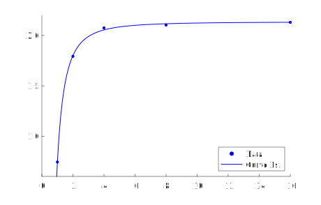

Create a multivariable curve-fitter that can work with any function as long as the derivatives are given (and are real near the solution).
A paper I was working on for a conference (see here for more) required me to run simulations, and I wanted to find the trends of the data. Google Sheets could work with some of the simpler functions, but not the last one: y = a*(1 - b*x^c).
I took a class on numerical methods the semester before, so I saw that this problem was an opportunity to practice C++ and numerical solvers.
I opted to use a bisection solver within a gradient solver, such that whichever variable had the greatest derivative magnitude would be the independent varaible in a bisection solver. Thus, for every iteration of the solver, the independent variable would be adjusted such that the squared error of the curve is minimized. Instead of taking the problem one step at a time, as I did for BB-DAQ and xls2xlsx, I tackled the whole problem at once. After around two days, the curve-fitter was up and running.
The code, along with a short README file, has been uploaded to a GitHub repository for others to use.
An example of this code's output will be shown for fitting y = a*(1 - b*x^c) to the following (x,y) points from the paper:
(1,0.7429400422)(2,1.793159669)(4,2.075100647)(8,2.103703704)(16,2.13058125)
Because the code uses a bisection solver, bounds for each parameter are needed. The following bounds were chosen for a, b, and c, respectively: [1,3], [0,1], [-3,-1]. The parameter values that the code yielded were 2.13588, 0.652533, and -2.05508, respectively, which resulted in a squared error of 0.000614609. A graph is included below with the points and the fitted curve:
